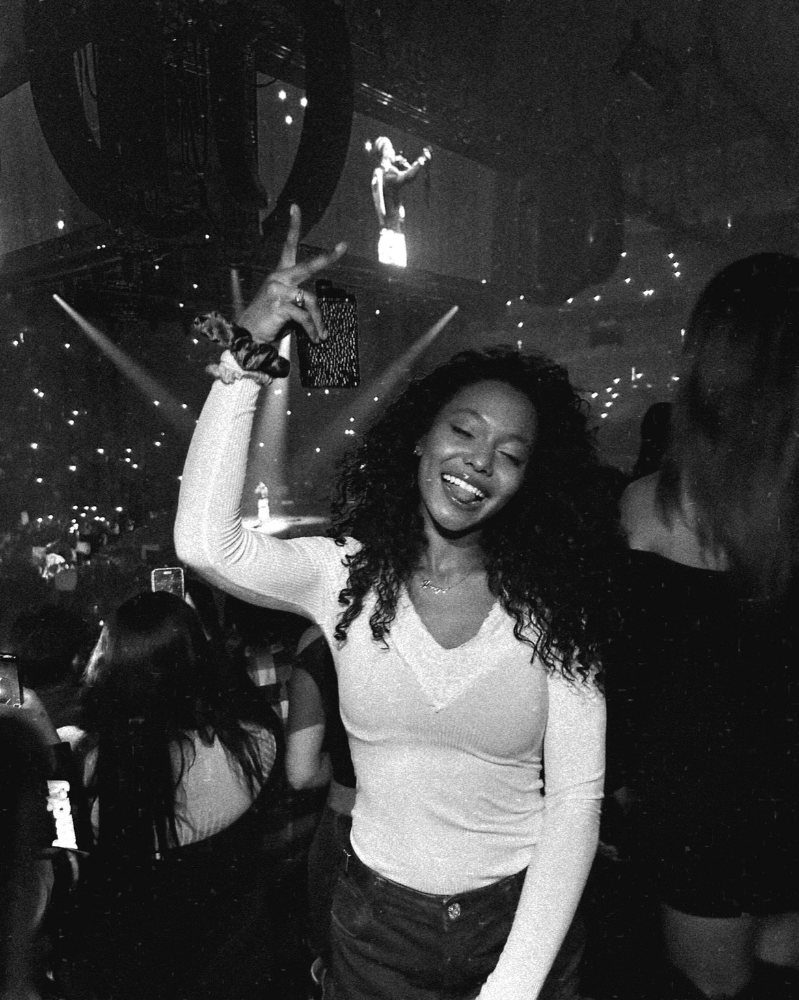
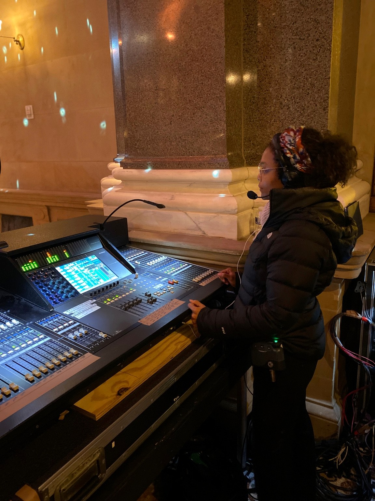

About
Rrya “Stacks” Harris
Rrya “Stacks” Harris is a New York & East Coast–based photographer specializing in live entertainment, concerts, festivals, cultural events, and branded experiences.
With a background in professional live audio and production, she approaches photography with an understanding of how performances are built—from lighting and stage design to the energy between artists and their audiences.
Her work aims to document not only the talent on stage, but also the production, atmosphere, and cultural design that brings each event to life.
Whether covering an intimate jazz performance, a major arena tour, or a branded live experience, Stacks creates imagery that captures the scale, emotion, and visual identity of every event.
Stacks’ goal is for her viewers to hear an experience through a photo.
Concerts · Tours · Festivals · Editorial · Brand Activations · Live Events